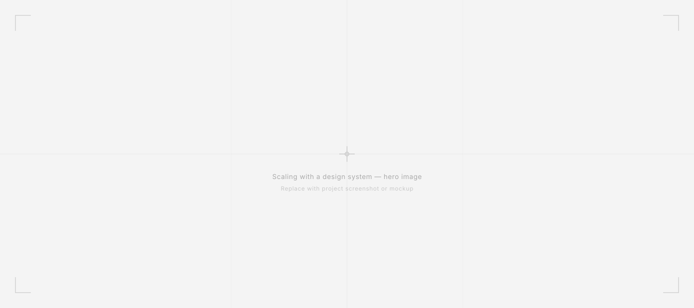

Scaling with
a design system
How Harmony — a unified design system — cut delivery cycle time by 50% across five platforms, built after three years of organizational groundwork and delivered in three months.

Context
Most organizations don't build a design system because they want one. They build one because the cost of not having it finally exceeds the cost of stopping to build it.
At CASSI that tipping point came after four years of parallel libraries, diverging components, and design decisions that couldn't propagate across five separate platforms. Harmony is the system we built to fix that.
CASSI's digital ecosystem spans five platforms: a participant portal, a public-facing site, an employee intranet, the main mobile app, and a second app built from scratch for a specific beneficiary segment. When the UX team was founded in 2022, each product evolved independently — maintained by separate Figma libraries with different update cycles, inconsistent token structures, and no shared governance.
The consequence wasn't just visual inconsistency — though that was real. The deeper cost was decision debt. Every pattern solved in one platform had to be re-litigated in the next. Accessibility criteria established for one product weren't guaranteed to carry over. Components built for mobile didn't inform web. Four years of design work existed in five places simultaneously, and effectively in none of them.
The real problem
The surface problem was maintenance overhead. The real problem was that CASSI had no mechanism for design decisions to compound.
Good decisions made in one product — an accessible error state, a well-tested form pattern, a content standard that reduced call center contacts — existed only in that product. The next team working on a different platform started from scratch, or worse, from a slightly wrong copy of what the first team had built. The cost wasn't visible in any single sprint. It was structural, and it grew with every new feature shipped.
Harmony's goal wasn't to standardize aesthetics. It was to make good decisions durable.
My role
I led Harmony from initial articulation through production launch — including three years of organizational groundwork before a line was built.
That groundwork matters as context. The initiative originated as an internal need within the Marketing team. I identified the overlap with UX's own fragmentation problem and brokered the alignment between Marketing, UX, and IT that turned a vague shared frustration into a funded, staffed project.
- Defined the governance model and what enters and exits the library.
- Led the hands-on build of components, tokens, and variables.
- Established the review process for library contributions.
- Oversaw adoption across all five platforms.
- Led the UX team of up to nine people during the majority of Harmony's development — meaning the system had to be built in parallel with active product delivery, not instead of it.
Key decisions
One library, not a coordinated family of libraries. A federated model was rejected because CASSI's team size and cross-platform consistency requirements meant federation's maintenance overhead would recreate the problem we were solving.
As an organizational decision — a dominant market stack that widens the available talent pool, reduces onboarding friction, and is compatible with AI-assisted development workflows. The technology choice was as much about organizational sustainability as technical quality.
For accessibility primitives — correct keyboard navigation, ARIA roles, focus management, screen reader behavior — out of the box. This removed an entire category of solved problems from Harmony's roadmap, so the team's energy went to decisions that were actually specific to CASSI's context.
ContentOps standards and accessibility criteria were built into components at the token and property level — not documented separately as guidelines. An error state ships with the correct contrast ratio, the right ARIA attributes, and a content pattern, because those aren't three separate decisions. They're one component.

Results
reduction in delivery cycle time — second product took 8 weeks vs 16 for the first
platforms live on Harmony — adoption is the path of least resistance
coded Storybook library launched
of truth consolidating four years of UX decisions
Beyond delivery speed, Harmony consolidates four years of UX decisions into a single governed source of truth. Cross-channel consistency, which previously depended on individual designer discipline, is now a structural property of the system. New team members build from validated patterns rather than reconstructing decisions their predecessors already made.